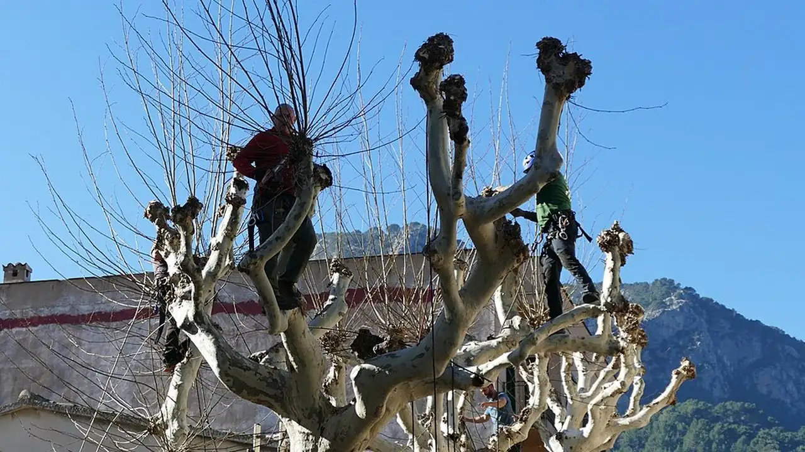
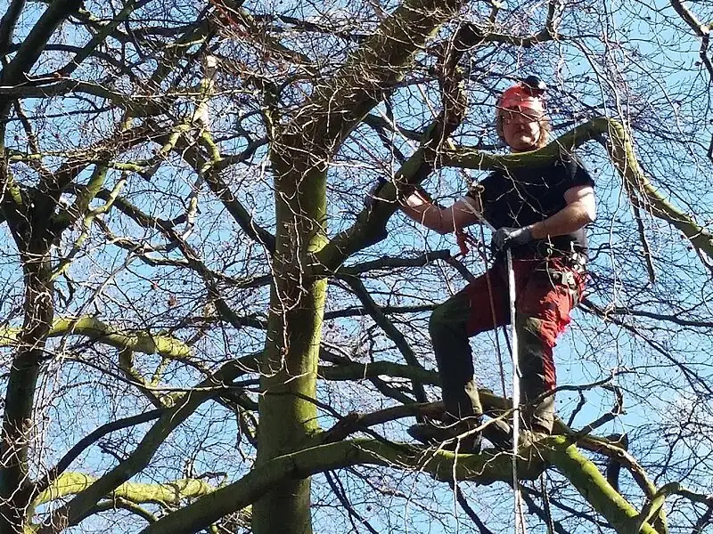
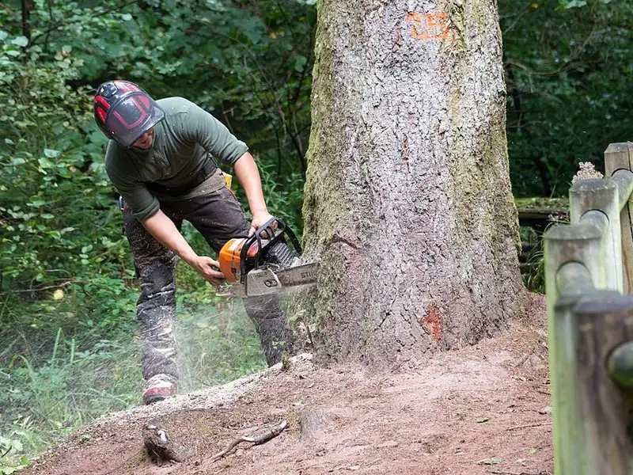
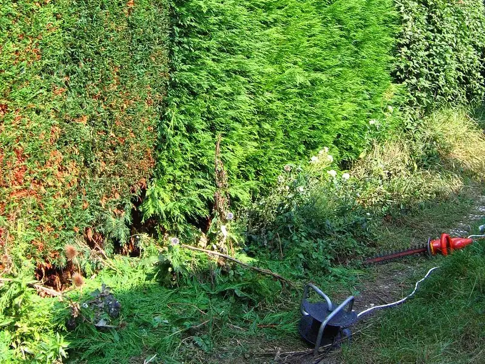

Élagage et entretien de jardin à Nantes et Saint-Étienne-de-Montluc
Élagage, abattage même d'arbres dangereux, haies, souches, pelouse et clôtures. Nacelle, déchets évacués. Envoyez une photo, on vous donne un prix.
Un arbre vous inquiète ?
Deux photos de l'arbre ou de la haie suffisent pour une première estimation.
40 ans d'élagage entre Loire et Sillon de Bretagne
Jean Ferret élague, abat et entretient les jardins de Saint-Étienne-de-Montluc, Couëron, Saint-Herblain et de toute l'agglomération nantaise. Grimpe ou nacelle selon l'arbre, chantier sécurisé, et le jardin rendu propre.
Un seul interlocuteur du devis au nettoyage : celui qui vient voir votre arbre est celui qui le taille.
Du grand arbre à la clôture

Élagage
Réduction, bois mort, arbres dangereux.
Voir l'élagage
Abattage
Démontage par rétention près des maisons.
Voir l'abattage
Taille et abattage de haies
Thuyas, lauriers, haies trop hautes ou à supprimer.
Voir les haiesEnlèvement des souches
Rognage ou extraction, terrain remis à niveau.
Voir le dessouchageTonte et entretien
Passage ponctuel ou régulier.
Voir l'entretienCréation de pelouse
Préparation du sol et semis.
Voir la pelouseTerrassement
Mise à niveau du terrain.
Voir le terrassementClôtures et claustras
Clôture souple, rigide, panneaux occultants.
Voir les clôtures4 étapes, du premier contact au jardin propre
Vous envoyez une photo
Par le questionnaire ou par téléphone.
Première estimation
Une fourchette de prix d'après vos photos.
Visite et devis
On confirme sur place : accès, hauteur, déchets.
Chantier et nettoyage
Travail en sécurité, déchets verts évacués.
Communes desservies
Nantes et 30 km autour, surtout à l'ouest de l'agglomération.
- Saint-Étienne-de-Montluc
- Couëron
- Sautron
- Orvault
- Cordemais
- Le Temple-de-Bretagne
- Vigneux-de-Bretagne
- Savenay
- Nantes
- Bouguenais
- Saint-Herblain
- Rezé
- La Chapelle-sur-Erdre
- Sucé-sur-Erdre
- Sainte-Luce-sur-Loire
- Saint-Sébastien-sur-Loire
- Vertou
- Les Sorinières
- Le Pellerin
- La Montagne
- Saint-Jean-de-Boisseau
- Lavau-sur-Loire
- Malville
- Treillières
Vos questions avant un devis
Combien coûte un élagage ?
Le prix dépend de la hauteur, de l'accès et du volume de bois à évacuer. Envoyez une photo pour recevoir une fourchette. Le devis est gratuit.
Le devis est-il vraiment gratuit ?
Oui, l'estimation sur photo et le devis sur place sont gratuits et sans engagement.
Vous emportez les déchets verts ?
Oui, branches, bois et feuillage sont évacués. Le jardin est rendu propre.
Vous intervenez sur un arbre dangereux ?
Oui, avec la nacelle ou par démontage en rétention quand l'arbre est près d'une maison, d'un toit ou d'une ligne.
D'autres réponses dans nos conseils jardin : quand tailler une haie, prix d'un élagage, l'arbre du voisin.
Votre projet en tête ?
Un arbre, une haie, une clôture : décrivez-le en une minute.